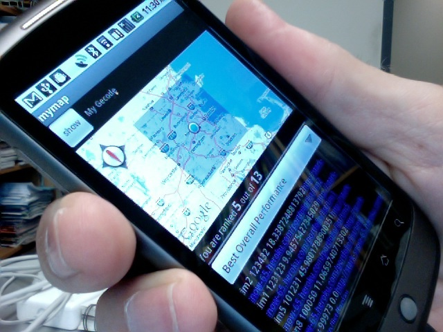

The Idea Lab at Brandeis


(to be launched in Fall 2010)
Learning by Making Change
The Idea Lab at Brandeis (ILaB) is a new pedagogical effort in which Computer Science students will learn to make positive change in the world by applying the knowledge and skills they have developed in their academic classes. Students will sign up for internships or independent studies and will be mentored by faculty in how to work collaboratively to solve community problems using CS techniques.
Community Generated Projects
The ILaB will solicit and evaluate projects from the community using a socially networked website allowing members of the community to comment on the potential impacts of successful projects as well as to volunteer their time and skills to particular projects.
Collaborative Faculty/Student/Staff Development Teams
The idea lab would put together teams of students mentored by faculty and advised by staff to select and tackle the most high impact community projects which are feasible for that team.
High Impact Projects
The ILaB will aim to select projects that have high impact in the world but that can also be completed and evaluated within one or two semesters.
Initial project: the ILaB Project page
The first project will be to create the social networking site that will allow members of the Brandeis community to propose projects and to view projects proposed by others, potentially adding comments or volunteering to participate in some capacity.
One possible project: the Comprehensive Academic Planner (CAP)

Academic planning several years in advance is a long standing problem in Universities for students, faculty, and adminstrators alike. This project would address these problems by building a system that would allow departments to easily enter and update their tentative 3 year academic plans and allow students to use those plans to develop 4 year academic schedules could greatly improve the ability of students to plan their Brandeis careers as well as helping departments estimate the demand for courses several years in the future. Such a project would require collaboration with LTS, but the goal would be to have ILaB assume responsibility for building, developing, maintaining, and disseminating the project.
The information collected by the CAP project could be leveraged to increase the effectiveness of academic planning in a number of ways (including allowing students to create, share, and comment on named clusters of courses to help other students see the curriculum in new ways and enhance their college experience). Amazon style recommender systems could also be created to help students select courses. If successful, such a system could be useful at other Universities and would help, in a small way, to improve the quality of the higher education experience world-wide.